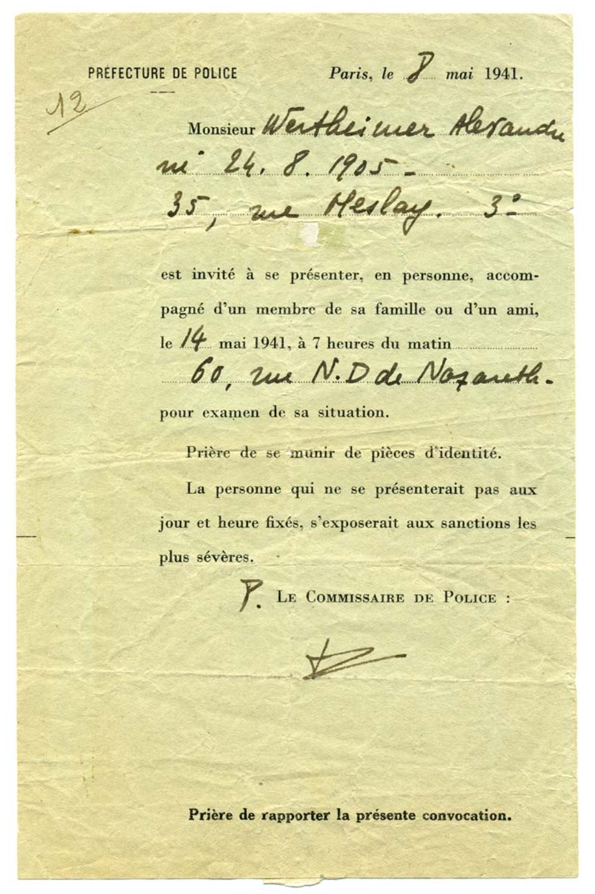
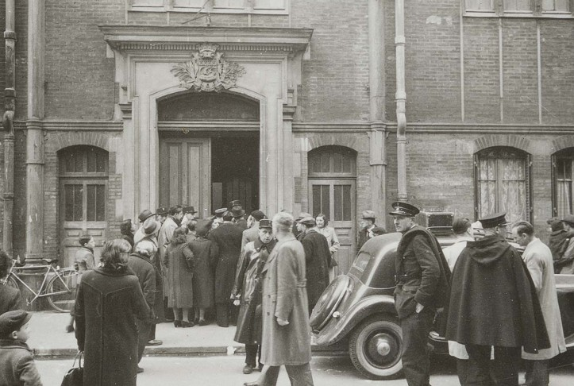
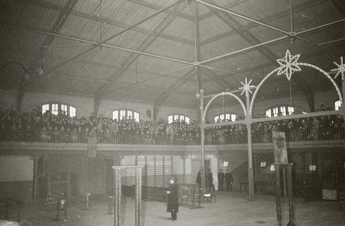
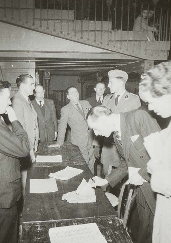
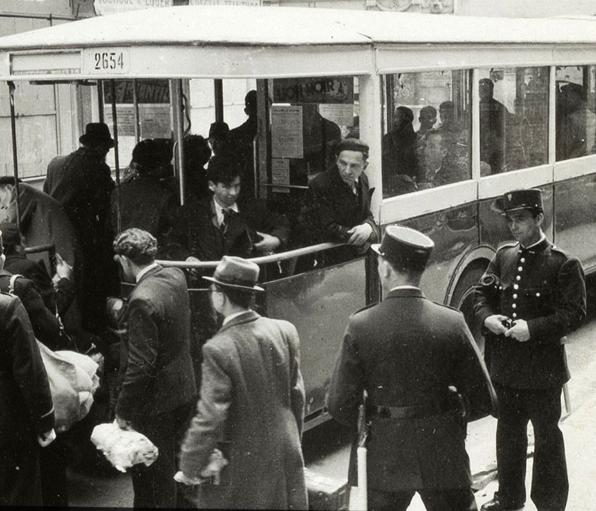
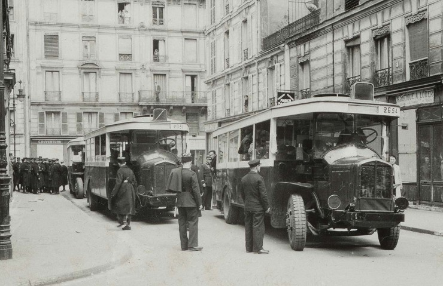
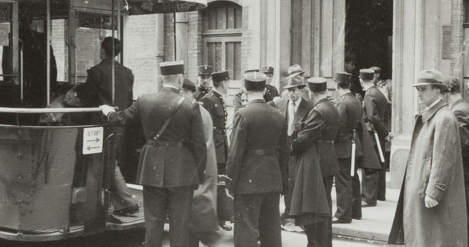
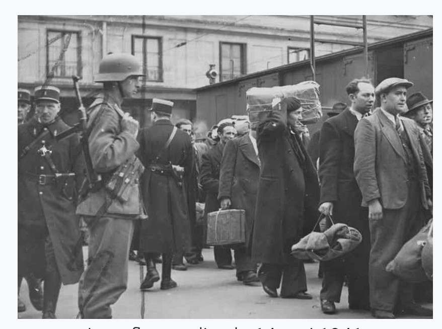

Contexte historique
La rafle du billet vert est la première grande rafle de Juifs en France, organisée le 14 mai 1941 par la police française sous contrôle allemand. Elle vise principalement des hommes juifs étrangers.
Cette opération marque une étape décisive dans la politique d’internement et de déportation.

Les convocations
Dès le 7 mai 1941, plusieurs milliers de Juifs étrangers reçoivent une convocation imprimée sur un papier vert. Le texte évoque un simple « examen de situation », mais précise que toute absence entraînera des sanctions sévères.


Contrôles et enregistrement
Sur place, les hommes sont soumis à des contrôles d’identité, des vérifications administratives et des interrogatoires sommaires. Les policiers consignent les informations et préparent les groupes destinés aux camps du Loiret.

Arrestations et départ en bus
Une fois les contrôles effectués, les hommes sont arrêtés et conduits vers des bus réquisitionnés. La police française encadre les opérations sous supervision allemande.



Vers les camps du Loiret
Les hommes sont ensuite dirigés vers les gares, puis embarqués dans des trains à destination des camps de Pithiviers et Beaune‑la‑Rolande.

Mémoire
La rafle du billet vert est un événement central de la persécution antisémite en France. Elle montre que, dès 1941, la police française participe activement aux arrestations de Juifs.